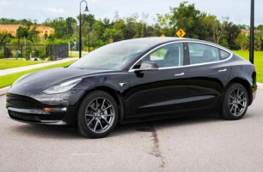
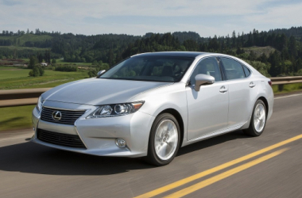

НАШИ УСЛУГИ

ПОЧЕМУ МЫ?
650
успешно доставленных авто
большой опыт пригона автомобилей из США под ключ, все клиенты остались довольны на 100%
5
лет на рынке Украины
Работаем по всей территории Украины, работаем по договору с клиентами
100 %
доверия клиентов
Онлайн отчетность. Вы всегда в курсе статуса подбора вашего авто. Фото и видео отчет
ПРИГНАННЫЕ НАМИ АВТО

INFINITI QX50 2016 г.
Экономия 4500 $

TESLA MODEL 3 2018 г.
Экономия 5500 $

TESLA MODEL 3 2018 г.
Экономия 5500 $
INFINITI QX50 2016 г.
Экономия 4500 $
TESLA MODEL 3 2018 г.
Экономия 5500 $
TESLA MODEL 3 2018 г.
Экономия 5500 $